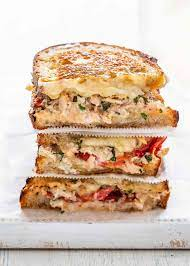

How to Make a Spicy Tuna Melt

The nostalgia of a WonderBread tuna sandwich meets the elevated nutty Dave's Killer Bread
pressed between the hot cast iron plates of a panini press.
This warm sandwich is sure to indulge your cravings for crunch and spice-- and takes less than 10 minutes to make!
By using the heart healthy Dave's Killer Whole Seed Wheat Bread, this is a great option for busy moms trying
to sneak nutrients into their kid's diets or health-nuts trying to get more creative hitting their protein goals.
Ingredients:
Makes two sandwiches
- 4 slices of Dave's Killer Whole Seed Wheat Bread
- 1 can Starkist Tuna
- 2 tsp Japanese Kewpie Mayo
- 1 tsp Sriracha
- 2 slices Sharp White Cheddar
- Non-stick cooking spray
Steps:
- Plug in the panini press to get it nice and hot.
- Mix tuna, Kewpie Mayo, and Sriracha in a medium sized bowl.
- Place one slice of cheese on one side of each sandwich and divide the tuna mixture between both slices.
- Close the sandwiches with the left over slices of bread and spray the panini press with cooking oil.
- Put the sandwiches on the press and close the lid to get cookin'!
- Cook for 3 minutes. Turn the sandwiches 90 degrees to get that special crosshatch design. Cook for 3 more minutes.
- Remove and enjoy with a bundle of grapes and a handful of potato chips!